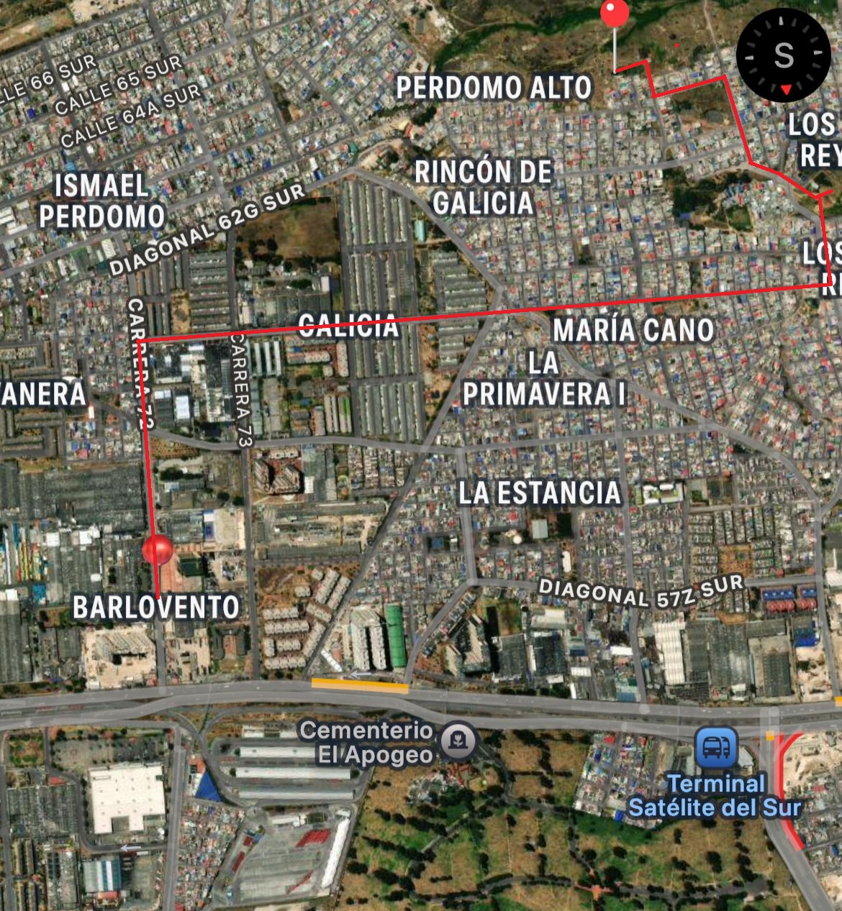

🎵
🔊
Volumen
25%
50%
75%
Recorrido Perdomo
Ciudad Bolívar, Bogotá · Localidad 19
Proyecto Académico · Uniminuto

🎓
1
Uniminuto
🏭
2
Fábricas
🚔
3
CAI Perdomo
🏫
4
Col. Cundinamarca
🏪
5
Galicia
🌳
6
Parque María Cano
🪜
7
La Subida
🏛️
8
Casa Cultural & Cancha
🌱
9
Huerta T. de Bolívar
⚠️
10
Asentamientos Riesgo
🏁
11
Perdomo Alto
Inicio del recorrido
Punto de interés
Espacio público / parque
Zona de alto riesgo
Final del recorrido
📍 Toca un pin para explorar el lugar
← Volver al mapa
← Anterior
Siguiente →